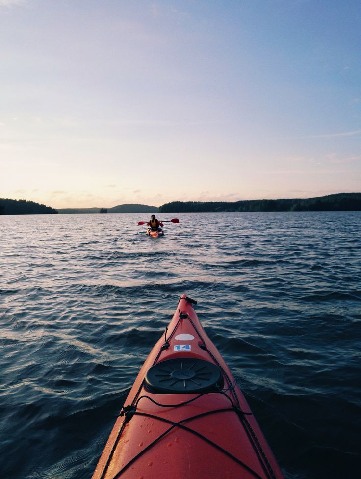

Como elas surgiram?
A ideia de utilizar recursos naturais para facilitar ou automatizar o trabalho braçal é bastante antiga. Moinhos movidos a vento ou a água já eram usados cerca de 2 mil anos a.C. na agricultura chinesa. Rodas d’água eram usadas por gregos e romanos para girar maquinários. Apenas no final do século XIX, foram criadas estruturas capazes de utilizar fontes provenientes da natureza para gerar energia elétrica.
A primeira usina hidrelétrica ficou pronta no ano de 1882, utilizando como recurso hídrico o rio Fox, em Appleton, nos Estados Unidos. O projeto consistia na ligação de uma turbina de água a um gerador de energia, produzindo cerca de 12,5 kW. Outras usinas foram abertas, alimentando apenas fazendas e pequenas propriedades. Após a Segunda Guerra Mundial, elas passaram a ser utilizadas por grandes indústrias, que tomaram posse de rios, corredeiras e cachoeiras para construí-las.
Penosamente, no final da década de 80, as usinas puderam ser usadas para alimentar cidades. A energia era transportada por meio da corrente elétrica e, até então, havia apenas a corrente contínua, que limitava a distância desse transporte. Com o desenvolvimento da corrente alternada, distâncias cada vez maiores puderam ser atingidas.
No Brasil, a primeira usina hidrelétrica surgiu em 1889, em Minas Gerais. Seu uso era voltado para a iluminação pública e principalmente para facilitar o trabalho manual da época. Hoje, dentre as usinas hidrelétricas do país, temos a usina Itaipu, em Foz do Iguaçu. Ela é a segunda maior usina hidrelétrica do mundo, em termos de capacidade energética, produzindo cerca de 14.000 MW.
Figura: Usina Itaipu, em Foz do Iguaçu.
Como elas funcionam?
Uma usina hidrelétrica parte do princípio de conservação da energia para que seja gerada energia elétrica. O esquema da Figura mostra os principais componentes para seu funcionamento.
Figura: Processo de geração de energia
Tradicionalmente, uma usina hidrelétrica funciona com a captação de água por meio do represamento de um córrego e/ou rio. Essa represa de água abastece a estrutura da usina hidrelétrica por meio da utilização de dutos, que canalizam a água represada até as turbinas.
Já as chamadas turbinas transformam a força da água em energia mecânica, e, consequentemente, os geradores instalados na casa de força transformam a energia mecânica em elétrica.

Usinas hidrelétricas
Desse modo, há a produção de energia elétrica, principal produto das usinas hidrelétricas, que é distribuída a partir de uma central de abastecimento. Por sua vez, completam a estrutura de funcionamento de uma usina hidrelétrica diversas estruturas de segurança, como o vertedouro e a casa de força.
As usinas hidrelétricas possuem uma estrutura de funcionamento bastante segura e efetiva, mesmo com os impactos ambientais frutos da sua instalação.
Vantagens
É uma fonte que contribui de forma importante para o combate à mudança climática, pois evita o uso de combustíveis fósseis e reduz as emissões de dióxido de carbono, gases que alteram o clima e material particulado, contrastando assim a poluição e o efeito estufa.
Como em outras fontes verdes, as vantagens tendem a aumentar com o tempo à medida que o desempenho e a eficiência aumentam e, em paralelo, os materiais são melhor reciclados, os custos são otimizados e o impacto sobre o meio ambiente é reduzido. Algumas características, no entanto, diferenciam a energia hídrica de outras renováveis: aqui estão 8 vantagens que dizem por que a energia hídrica desempenha um papel de primeiro plano no equilíbrio energético mundial.
1. Limpa e Sustentável
A energia hidrelétrica é uma fonte limpa, pois gera eletricidade sem emitir gases de efeito estufa ou outros poluentes: contribui para diminuir o consumo de combustíveis fósseis, reduzindo a poluição do ar e mitigando a mudança climática.
Figura: Fonte renovável.
E é uma energia renovável - ilimitada no tempo - porque são as suas fontes que se renovam, ou seja, rios e riachos alimentados pelo ciclo natural da água. Além disso, uma usina hidrelétrica não retira água do meio ambiente, porque a água retirada é totalmente devolvida com o tempo.
2. Recurso muito flexível
Diante da disponibilidade de água que pode variar com o tempo, as centrais elétricas são extremamente flexíveis. Os sistemas de produção requerem apenas uma quantidade muito pequena de energia para arrancar, de tal forma que em questão de minutos até mesmo uma grande usina pode passar da inatividade à plena potência, e vice-versa. Esta capacidade de resposta depende do tipo de turbina utilizada e da gestão dos fluxos de água.
3. Estabilização da Rede Elétrica
Uma usina hidrelétrica de armazenamento por bombeamento atua como um depósito de energia: o excesso de eletricidade produzido por usinas eólicas ou solares quando as condições climáticas são favoráveis pode ser usado para bombear água para o reservatório superior. Em seguida, quando não há sol ou vento, a água pode ser lançada para gerar eletricidade através de turbinas. Desta forma, a usina hidrelétrica tem um efeito estabilizador sobre a rede elétrica.
4. Reduz o risco de inundação
Uma usina hidrelétrica não gera apenas eletricidade, mas interage com o território em que está localizada, contribuindo para seu desenvolvimento.
Em primeiro lugar, inclui uma clara vantagem para o meio ambiente: a quantidade de água que é liberada (após gerar eletricidade) pode ser controlada ao longo do tempo e com grande precisão, tanto em termos de vazão quanto de volume total. Isto significa ser capaz de regular o fluxo continuamente, reduzindo muito o risco de inundação em caso de chuvas fortes, o que também beneficia as culturas em áreas irrigadas a jusante.
5. Proteção da biodiversidade
A presença de grandes massas de água em reservatórios incentiva o crescimento da vegetação, com isso, a regularização dos fluxos pode contribuir para a recuperação de áreas pantanosas, reduzindo o acúmulo de água estagnada, que por sua vez atrai os animais: assim, as usinas hidrelétricas muitas vezes se tornam espaços para a preservação da biodiversidade.
Figura: Áreas Pantanosas
a infra-estrutura da usina retém galhos, árvores e outros objetos sólidos, facilitando a navegabilidade dos rios a jusante.
Com isto em mente, canais e rampas de passagem são frequentemente construídos ao lado de represas e açudes, permitindo que os peixes possam descer ou subir livremente nos cursos de água.
6. Áreas turísticas e dos esportes aquáticos
Nas proximidades de um reservatório, inclusive para necessidades operacionais, são criados caminhos pedonais, que podem ser disponibilizados para uso turístico; sempre que possível, algumas represas também são disponibilizadas para ciclovias, para o turismo ciclístico: uma forma de valorizar áreas que muitas vezes são muito bonitas do ponto de vista paisagístico.
Figura: Esportes aquáticos
Além disso, um rio mais limpo graças a uma usina hidrelétrica também é um recurso para a pesca e esportes aquáticos como o rafting ou a canoagem. E ainda, a pesca é uma importante atividade econômica para muitas comunidades e, neste sentido, a presença de um reservatório pode ser um recurso significativo
7. Maior Custo-Beneficio
Embora o investimento inicial na instalação de uma usina seja desafiador e caro, em geral, a energia hídrica é a menos cara em absoluto a médio e longo prazo. Criadas as barragens, realizadas as usinas e instaladas as turbinas, a manutenção necessária é mínima em comparação com o investimento inicial. E com a crescente digitalização das centrais elétricas, há maior eficiência e outros benefícios, como a redução do desperdício.
8. Modernização da Tecnologia
As novas tecnologias fornecem máquinas cada vez mais eficientes para a energia hidrelétrica. Assim, a modernização das usinas aumenta a capacidade instalada e, portanto, a produção de eletricidade: esta é aí prática da repotenciação, graças à qual as emissões de gases de efeito estufa do setor energético são ainda menores.
Figura: Maior usina do mundo, Três Gargantas.
A tecnologia também desempenha um papel de liderança na manutenção de usinas elétricas - e garante a máxima segurança permitindo que intervenções preventivas sejam realizadas de forma segura e eficiente.
Desvantagens
Por outro lado, uma das principais desvantagens da energia hidrelétrica está no grande impacto ambiental gerado na construção de barragens, que alaga toda uma área, levando à desapropriação de quaisquer populações lá instaladas e acabando com a flora e a fauna da região.
O represamento do rio leva a uma alteração do seu fluxo, o que pode alterar os níveis de oxigênio na água. A vegetação que fica submersa acaba liberando quantidades significativas de metano em sua decomposição, que é liberada na atmosfera e contribui para o efeito estufa.
Mudanças climáticas também decorrem do grande volume de água represado, que pode alterar o regime de chuvas na região, sem contar os períodos de seca cada vez mais frequentes no Brasil, os quais afetam a produção das hidrelétricas e encarecem o preço da energia para os consumidores.
Por fim, as barragens das hidrelétricas também podem prejudicar a vida aquática, pois leva à perda de espécies de peixes e de plantas aquáticas.
Confira o resumo das principais desvantagens abaixo:
- Desmatamento;
- Alterações no clima e nas chuvas;
- Impactos na comunidade local, com realocamentos;
- Geração de metano por meio da decomposição da vegetação submersa;
- Preço mais alto a ser pago em épocas de seca;
- Mudanças no fluxo de rios, atingindo a vida aquática;
- Efeitos negativos para a fauna e a flora da região.
Potencial Energético no Mundo
O potencial energético da energia hidrelétrica é enorme. De fato, as gigantescas massas de água em altas altitudes são dotadas de uma considerável quantidade de energia potencial gravitacional, e aproveitar até mesmo apenas uma parte dela significa ter uma abundância de energia à disposição. Basta dizer que todas as maiores usinas de produção de energia do mundo são hidrelétricas, e que pode ser necessária apenas uma usina para satisfazer inteiramente as necessidades energéticas de milhões de pessoas.
É também um recurso disponível em muitos países, que pode assim produzir energia de forma mais auto-suficiente e sustentável, reduzindo a importação de matérias primas.
Na lista com as principais usinas hidrelétricas do mundo, temos:
- Três gargantas, na China, produzindo 22.500 MW;
- Itaipu, na fronteira do Brasil com o Paraguai, produzindo 14.000 MW;
- Belo Monte, no Brasil, produzindo 11.233 MW;
- Guri, na Venezuela, produzindo 10.200 MW;
- Tucuruí, no Brasil, produzindo 8370 MW;
- Grand Coulee, nos Estados Unidos, produzindo 6.494 MW.
É notável a forte presença brasileira na geração de energia hidrelétrica, justificada pelos invejáveis recursos hídricos do país.
Potencial Energético no BRASIL
A hidreletricidade tem sido a principal fonte de geração do sistema elétrico brasileiro por várias décadas, tanto pela sua competitividade econômica quanto pela abundância deste recurso energético a nível nacional. O Brasil dispõe de um sistema gerador com capacidade instalada de mais de 150 GW, com predominância hidrelétrica. Essa predominância decorre da extensa superfície territorial do país, com muitos planaltos e rios caudalosos.
O potencial hidrelétrico brasileiro é estimado em 172 GW, dos quais mais de 70% já foram aproveitados. Aproximadamente 70% do potencial ainda não aproveitado está localizado nas bacias hidrográficas Amazônica e Tocantins - Araguaia.
Trata-se de uma tecnologia madura e confiável que, no contexto de maior preocupação com as emissões de gases de efeito estufa, apresenta a vantagem adicional de ser uma fonte renovável de geração.

Figura: Comparativo Energético do Brasil
Sob o ponto de vista da operação elétrica, usinas hidrelétricas são recursos flexíveis, capazes de prover uma série de serviços ancilares, como o controle automático de geração, controle de tensão e de frequência. Muitas hidrelétricas possuem reservatórios de acumulação, que permitem regularizar as vazões afluentes aos rios, transferindo água de períodos úmidos para secos e, em alguns casos, de anos úmidos para anos secos.
Além disso, seus reservatórios podem promover diversos usos da água, tais como: controle de cheias, irrigação, processamento industrial, suprimento de água para consumo humano, recreação e serviços de navegação. A capacidade de regularização dos reservatórios, face o crescente sistema, vem diminuindo nos últimos anos, devido às notórias dificuldades para construir novas hidrelétricas e reservatórios.